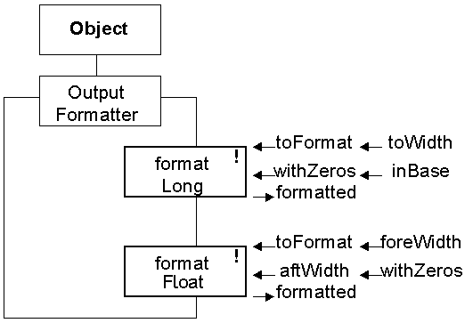

The output of formatted numeric values is described in sections 9.5 and 9.6 of the text book. (However there are some minor differences in the versions available from this page.) The OutputFormatter class is not a member of any package and so has to be placed into the current working directory (which shold be called something like way4!)
The class diagram of the OutputFormatter class is as follows.

The static formatLong() method can be used to obtain a formatted integer value. The toFormat argument is the value to be formatted, toWidth is the number of characters to use, withZeros is a boolean value which determines if the output is to be padded with leading zeros and inBase is the number base to use. The returned object, formatted, is a String containing the formatted value.
The static formatFloat() method can be used to obtain a formatted floating point value. The toFormat argument is the value to be formatted, foreWidth is the number of characters to use before the decimal point, aftWidth is the number of characters to use after the decimal point and withZeros is a boolean value which determines if the output is to be padded with leading zeros. The returned object, formatted, is a String containing the formatted value.
Both of these methods may throw an OutputFormatException: if the inBase argument to formatLong() is inapropriate or if the toFormat argument to formatDouble() is too large.


Read sections 9.5 and 9.6 of the text book to become familiar with the implementation of these classes.
Obtain the classes and compile and run the OutputFormatterDemonstration client.
Make sure you are familiar with the use of this class by extending the demonstration client to ouput more values with different formatting.
Revisit some of the exercises from waypoint 2 and reimplement them to make use of these formatting capabilities.